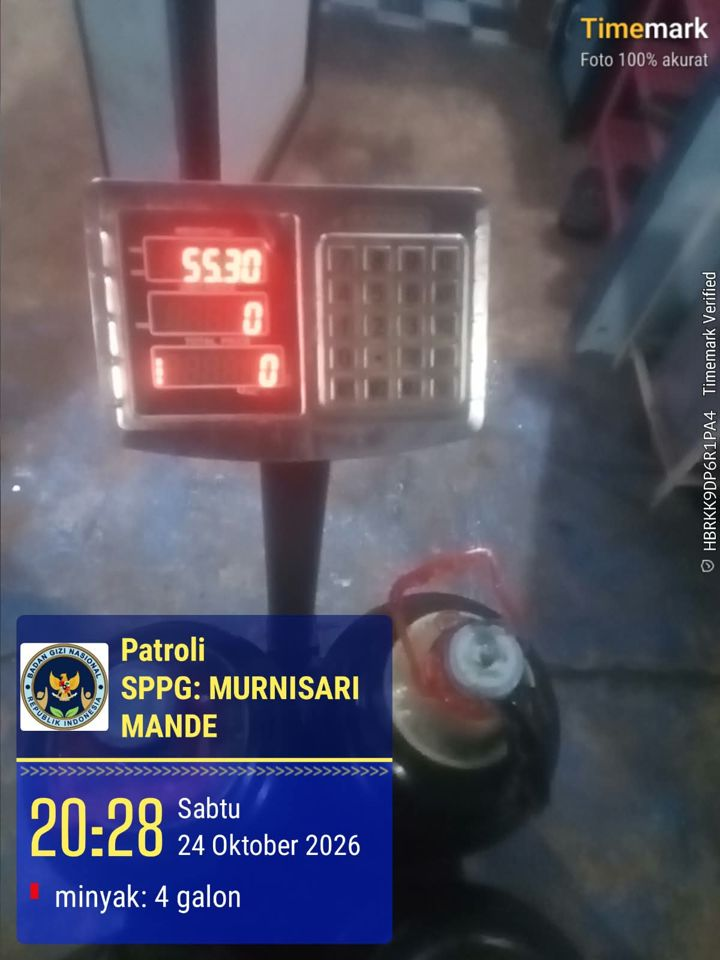
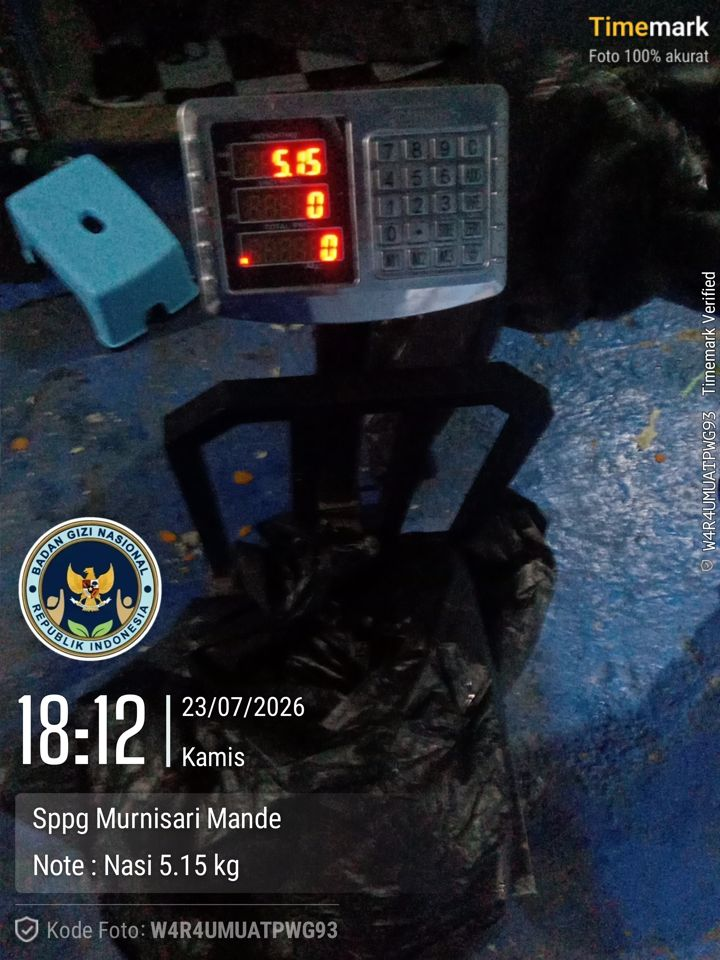

Jelantah dapur MBG bisa menjadi bahan bakar pesawat, asalkan punya dokumen asal yang bisa diaudit.
Kilang bioavtur bersertifikat mensyaratkan setiap titik asal jelantah menyatakan kemurnian limbahnya, mencatat jumlah kiriman, dan siap diaudit. Dapur MBG belum punya dokumen itu. JELANTAH TERBANG membuatnya dari foto timbangan yang sudah diambil petugas setiap hari, melengkapi program pengumpulan jelantah Pertamina dari SPPG [2], bukan menggantikannya.
Catat penjualan jelantah
Petugas cukup memotret layar timbangan. Stempel waktu, tanggal, nama dapur, lokasi, dan kode foto ditambahkan otomatis, seperti kamera berstempel waktu yang sudah dipakai di dapur MBG. Foto diolah di ponsel dan tidak dikirim ke mana pun.
Pengaturan dapur
Contoh data nyata: penjualan 24 Oktober 2026
SPPG Murnisari Mande, Cianjur · 4 kali timbang, 16 galon · foto dari kamera berstempel waktu yang dipakai petugas.
| # | Jam | Layar | Bersih (AI) | Manual |
|---|---|---|---|---|
| Total | – | – | – |
Uji mutu: kejernihan dan warna jelantah
Tuang sedikit jelantah ke tutup galon atau wadah bening di atas kertas putih (kartu acuan), lalu foto dari atas dengan cahaya cukup. Pengolahan citra berjalan langsung di peramban Anda; foto tidak dikirim ke mana pun.
2. Warna minyak dinormalkan terhadap kertas putih, sehingga hasil tidak bergantung pada lampu dan kamera.
3. Kejernihan = luminans minyak dibanding luminans kertas (cahaya yang menembus lapisan minyak). Warna diubah ke CIELAB (L*, a*, b*).
4. Keragaman piksel di area minyak menandai partikel atau endapan.
5. Kelas mutu mengikuti parameter dagang jelantah: asam lemak bebas (FFA) dan kadar air, kotoran, serta zat tak tersabunkan (MIU); acuan pasar FFA maks. 5% dan MIU maks. 2% [13]. Warna menaksir FFA, endapan dan air menaksir MIU. Jalur bioavtur (HEFA) atau biodiesel ditentukan pembeli; HEFA lebih toleran terhadap FFA tinggi, sedangkan biodiesel FAME memerlukan FFA rendah atau pra-olah.
Pendekatan warna untuk menilai minyak goreng bekas mengikuti Udomkun dkk. (2019, Journal of Food Quality).
Paspor kiriman jelantah
Satu paspor ber-QR untuk setiap kiriman. QR membuka halaman verifikasi yang dapat diperiksa pengumpul, kilang, auditor, atau BGN.
Dasbor dapur dan pembeli
SPPG Murnisari Mande · Oktober 2026 · 2.553 porsi per hari


untuk yayasan mitra, BGN, dan pembeli: jumlah, mutu, harga, dan jejak setiap kiriman bulan ini.
Verifikasi paspor
Untuk pengumpul, kilang, dan auditor: pindai QR atau ketik nomor paspor.
| Foto | SHA-256 dihitung | Paspor |
|---|---|---|
| Menghitung… | ||
Kalkulator dampak dan model bisnis
Geser asumsi untuk melihat dampak per tahun dari satu dapur percontohan sampai seluruh SPPG. Nilai awal memakai data SPPG Murnisari Mande.
Tentang purwarupa ini
Masalah. Dapur MBG menghasilkan jelantah dalam jumlah besar, tetapi beratnya dicatat manual, mutunya tidak diukur, dan tujuan akhirnya tidak tercatat. Akibatnya jelantah tidak dapat dihitung sebagai bahan baku bioavtur bersertifikat, dan harganya ditentukan pengepul.
Solusi. Paspor digital: petugas memotret timbangan seperti biasa; AI membaca berat, mengenali wadah untuk mengurangkan tara, menilai mutu, dan memeriksa kewajaran jumlah dengan neraca massa. Setiap kiriman memperoleh paspor ber-QR siap audit.
Status. TKT 3 (bukti konsep). Pembacaan berat dan neraca massa telah diuji pada 76 foto nyata. Halaman ini adalah purwarupa antarmuka: hasil baca AI timbangan ditampilkan dari uji tersebut, belum dari model yang berjalan langsung. Uji mutu (kejernihan dan warna) sudah berjalan langsung di peramban dengan pengolahan citra; ambang kelasnya ditetapkan setelah kalibrasi titrasi. Target: TKT 6, sistem utuh teruji di tiga SPPG selama minimal 8 minggu.
| Dr. H. Cecep Wiharma, S.H., M.H. | Ketua, dosen pembimbing; regulasi dan tata kelola |
| Muhammad Rafi Ramadhan, S.Tr.Stat. | Koordinator teknis; model AI, aplikasi, dasbor |
| Anisya Putri Wirahma, S.Tr.Stat. | Data dan evaluasi |
| Baharuddin Jusuf Wirahma, S.H., M.H. | Validasi pengguna; Kepala SPPG Murnisari Mande |
| Nabila Salsa Wirahma | Bisnis dan hilirisasi |
| Nadiyah Salma Wirahma | Regulasi dan data |
- InvestorTrust (19 Okt 2026): 26.385 dapur MBG lolos syarat
- Kontan (11 Sep 2026): Pertamina kumpulkan jelantah dari SPPG hingga Kopdes untuk SAF
- Bisnis.com (24 Jul 2026): mandatori SAF 1% mulai 2027
- detikFinance (10 Jan 2025): kilang Pertamina siap produksi SAF tersertifikasi
- ISCC: CORSIA self-declaration for points of origin of used cooking oil
- Metro TV (26 Jun 2025): penjualan jelantah MBG harus transparan
- Kontan (17 Jun 2025): jelantah MBG dihargai Rp7.000/L
- Udomkun, Innawong, & Sopa (2019). Can the image processing technique be potentially used to evaluate quality of frying oil? Journal of Food Quality, 6580320.
- ICAO: SAF rules of thumb
- ICAO Document 06: CORSIA default life cycle emissions values
- ICAO: CORSIA eligible fuels leaflet (nilai dasar avtur fosil)
- Transport & Environment (Des 2024): Used cooking oil, the certified unknown
- Fastmarkets: spesifikasi harga UCO Straits (FFA maks. 5%, MIU maks. 2%)